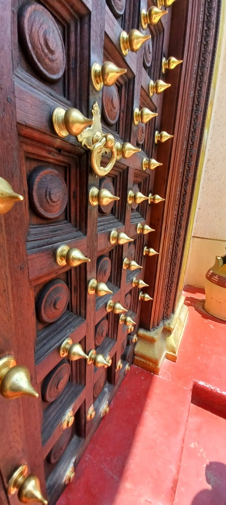
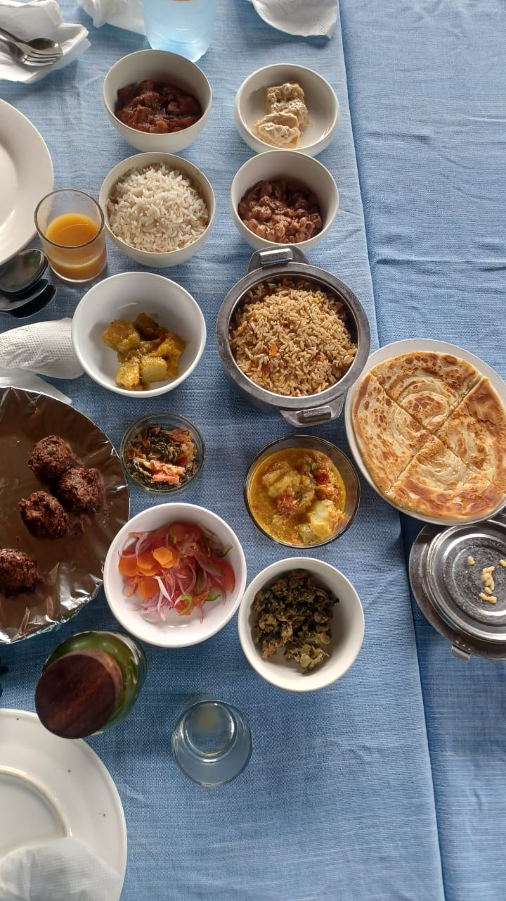

We offer a wide range of tourism services designed to make your holiday enjoyable and stress-free.
We book comfortable hotels and luxury lodges across Zanzibar Beaches at affordable prices.
Reliable transport from airport to hotels and tourist destinations.
Hire modern vehicles suitable for saferis, business trips, and family vocations.

A Zanzibar spice tour is a popular 3-hour guided walking excursion through rural organic plantation.Visitors see, smell, and taste fresh crops like vanilla, cinnamon, and cloves, watch palm-leaf weaving, enjoy seasonal fruit tastings, and often opt for tradtional Swahili lunch.
Relax on the beatiful white-sand beaches, enjoy water sports, and experience the rich culture of Zanzibar.
Explore Serengeti, Ngorongoro and Tarangire National Park while observing Africa's incredible wildlife.
| ZanzibarGuide FrancoPhone |
|---|
| We are always ready to help you plan your dream holiday. |
| Quick Links Home About Us Our Services Contact Us |
| Book Now WhatsApp:+255 714 277 303 Email: Instagram: |
| 2026 ZanzibarGuide FrancoPhone. All rights reserved. |